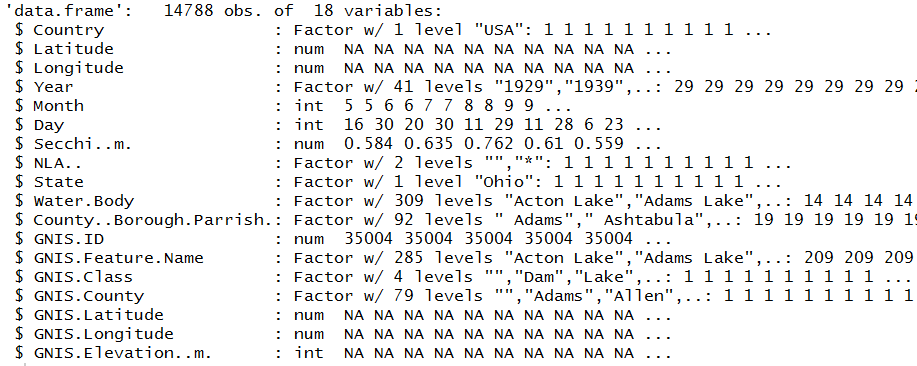
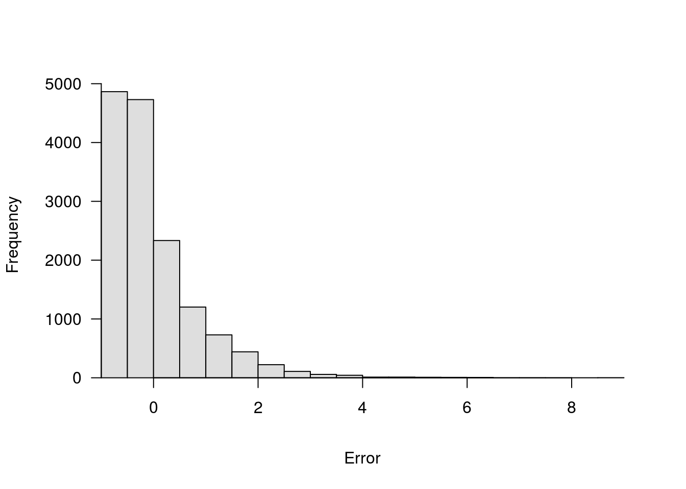
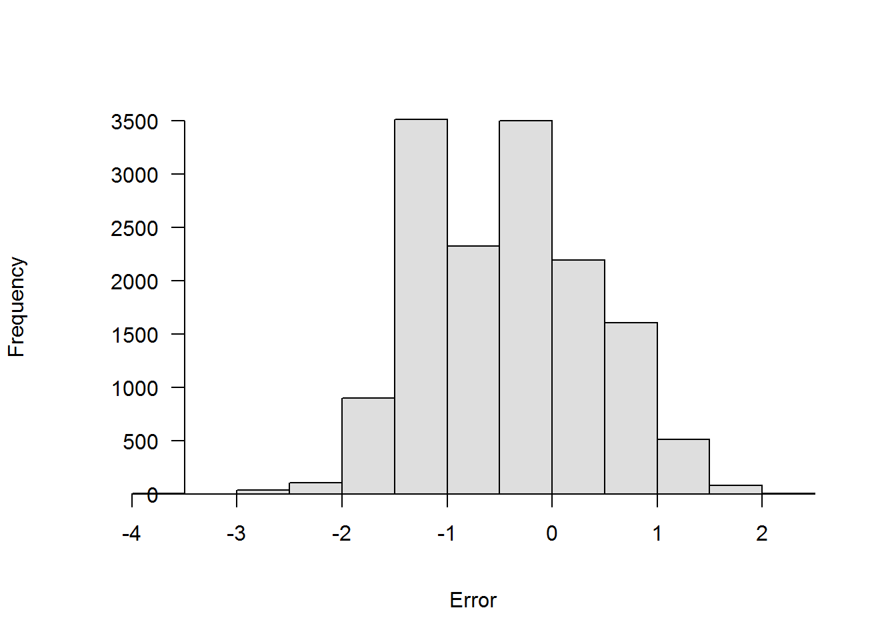
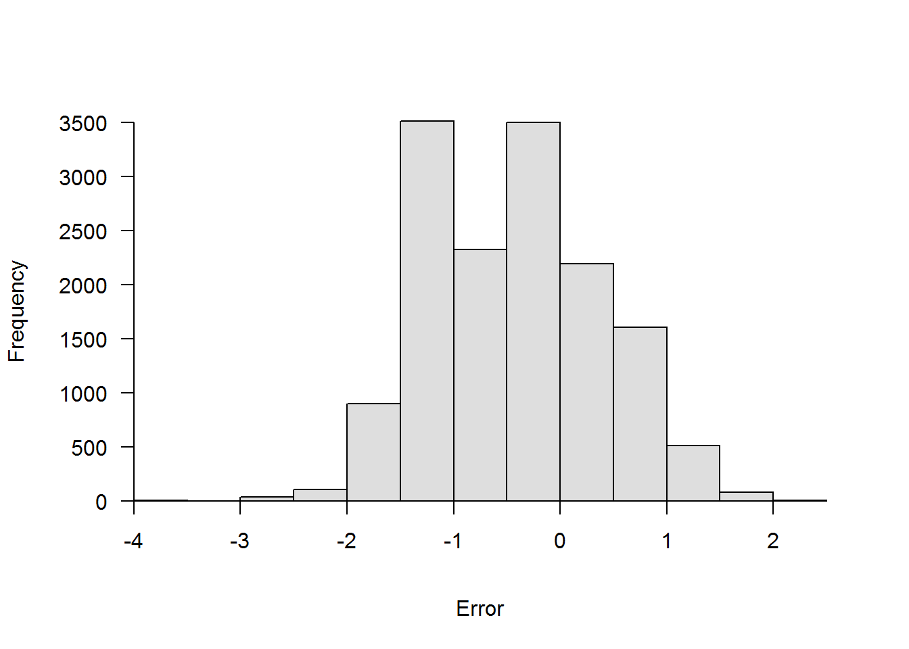
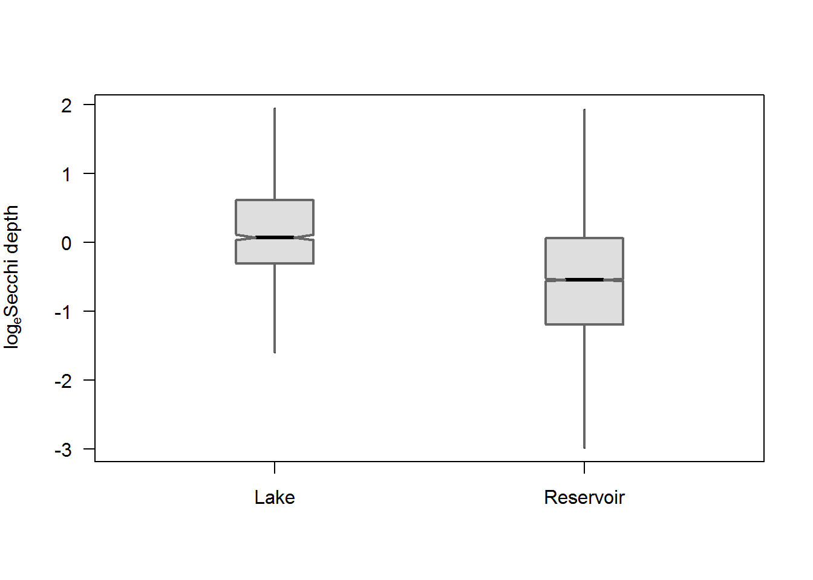
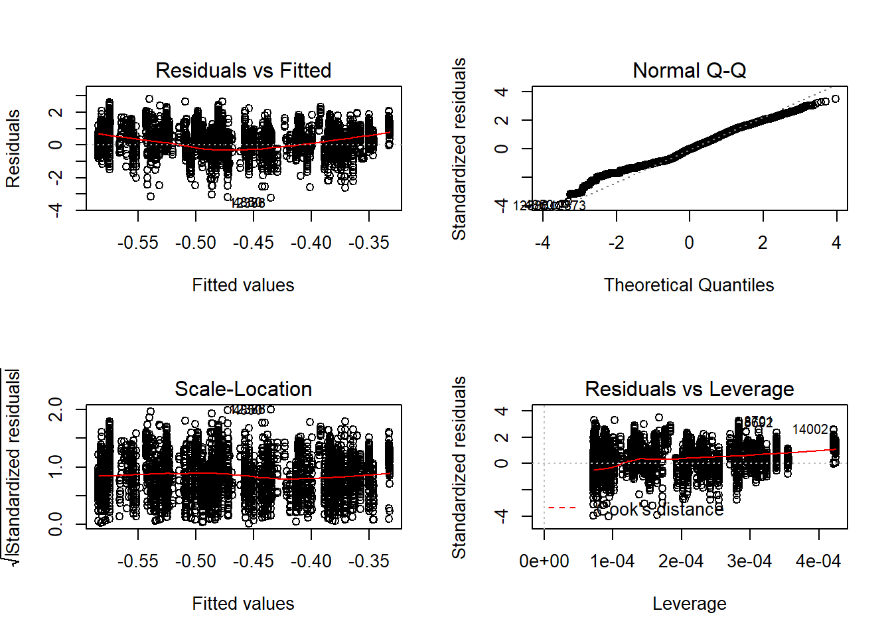
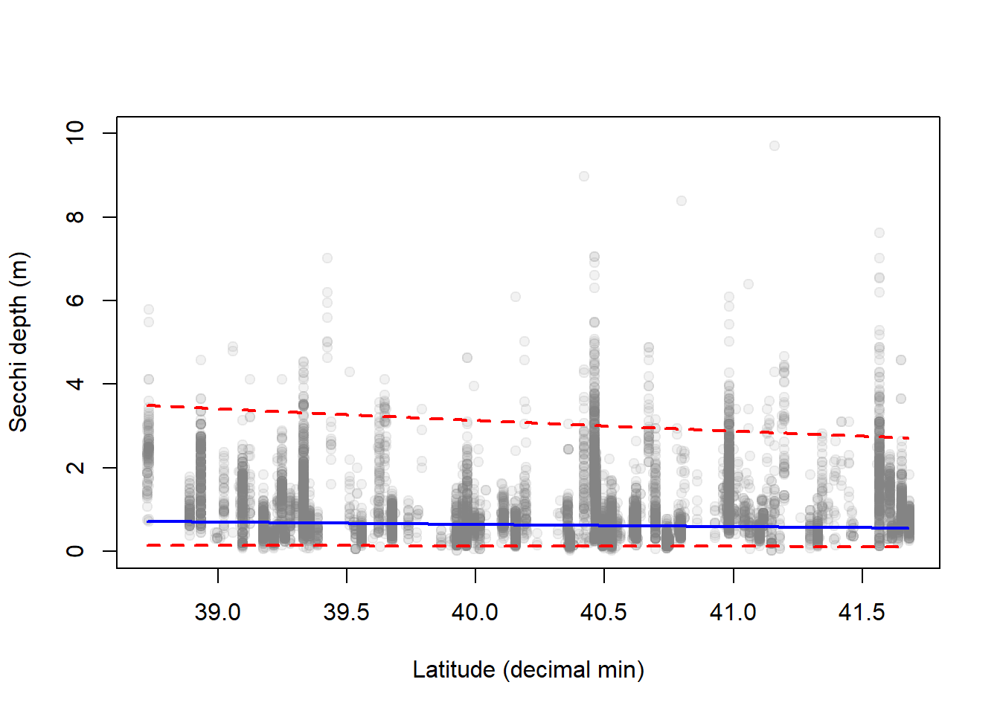
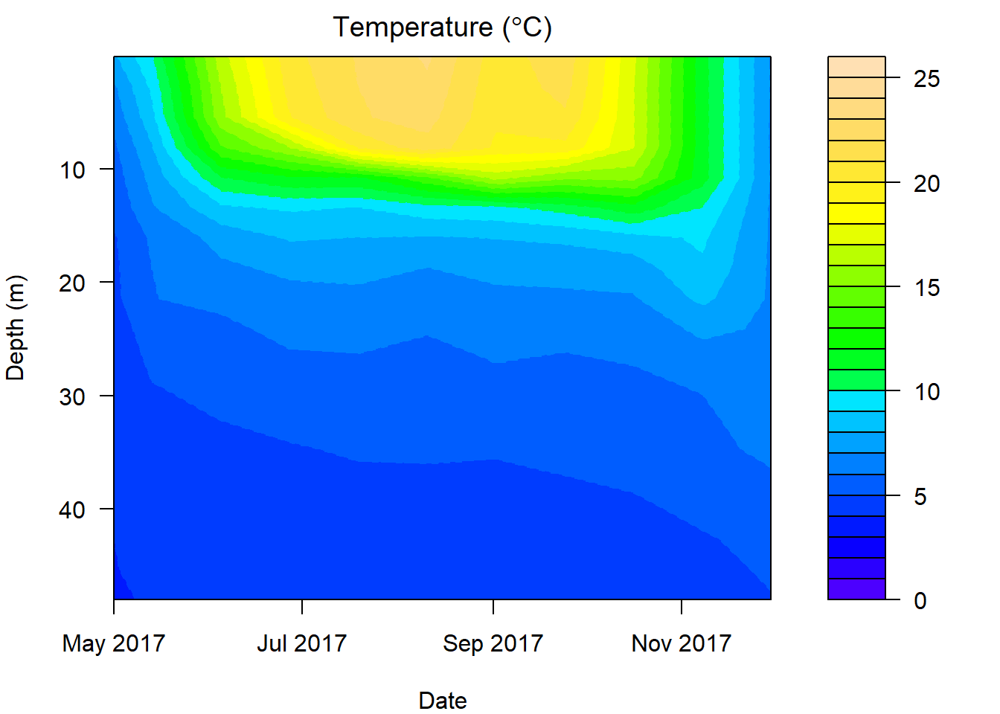

Intermediate R

Introduction
Once we have a basic grasp on how R works, and how and where to find help, the learning process becomes a lot less painful, and we can start to build an appreciation for how convenient it is to have a script we can come back to again and again. To show off this convenience, and the power of R as a statistics program, we will spend the afternoon session walking through some applied analyses and spend a little more time with data visualization tools.
The plan for the afternoon is to introduce a subset of the Secchi Dip-In data to do some standard statistical analysis with individual data points from many lakes, and then switch back to data visualization tools to create some isopleths of physical parameters measured at multiple times and depths over time in a single lake using the Otsego Lake data from the morning session.
Data overview and management
Before we ever get into a statistical analysis, it is always good practice to have a good, long look at the data we are working with to make sure everything makes sense, and to note issues that may rear their heads down the road.
Let’s start by reading in the Secchi Dip-In data. This particular data set is a subset of the whole, and contains only those data that were collected in the state of Ohio.
We read the data in with the argument stringsAsFactors = FALSE because there are a lot of string variables in the data, and factors can add extra handling time to our workflow (see morning session tutorial ).
ohio <- read.csv('ohio.csv', stringsAsFactors = FALSE)So, what are we working with here? Let’s have a look.
Remember from the morning session that it might be useful to understand how R sees your data first and foremost. The most reliable method for doing this with dataframes is to look at the structure of your data using str.
# Like this:
str(ohio)
Now that we have an idea of what the data set looks like, let’s take a little closer look. First, there are a couple of things that we can do that will clean up our code down the road a little bit. Let’s have a quick look at our column names again.
names(ohio)## [1] "Country" "Latitude"
## [3] "Longitude" "Year"
## [5] "Month" "Day"
## [7] "Secchi..m." "NLA.."
## [9] "State" "Water.Body"
## [11] "County..Borough.Parrish." "GNIS.ID"
## [13] "GNIS.Feature.Name" "GNIS.Class"
## [15] "GNIS.County" "GNIS.Latitude"
## [17] "GNIS.Longitude" "GNIS.Elevation..m."Most of these are nice and clean, but there are some things that happen when we read data into R from Excel files. One of the things that R does is to replace all spaces and special characters with periods (.). This can make things a little difficult to read when we write code. For example, the column that said Secchi (m) in our Excel spreadsheet now says Secchi..m.. This confusion is compounded by the fact that some programming languages and R functions rely on the . for special purposes.
We are not going to replace all of the names, because we are not going to work with all of the columns, but let’s replace a couple of these that we are definitely going to use.
For now, let’s change the names for Secchi..m. and for County..Borough.Parrish.. Remember that the result of names(ohio) is a vector, and that we can replace individual elements of that vector. We just need to know the index of the element we wish to replace. In this case, Secchi..m. is the 7th column of the dataframe ohio, and County..Borough.Parrish. is the 11th.
Here is how it works:
# First, we replace Secchi..m. with Secchi
names(ohio)[7] <- "Secchi"
# Next, we replace County..Borough.Parrish.
# with just County because we are working in a
# single state in this case, not becuase we are
# County-centric :)
names(ohio)[11] <- "County"Of course, we could always do this in one fell swoop:
# Replace names of both at once
# because that is cooler than one
# at a time.
names(ohio)[c(7,11)] <- c('Secchi', 'County')Have a quick look to make sure you are happy with the new names.
# Print the names of the df
# to the console so we can
# see them.
names(ohio)## [1] "Country" "Latitude" "Longitude"
## [4] "Year" "Month" "Day"
## [7] "Secchi" "NLA.." "State"
## [10] "Water.Body" "County" "GNIS.ID"
## [13] "GNIS.Feature.Name" "GNIS.Class" "GNIS.County"
## [16] "GNIS.Latitude" "GNIS.Longitude" "GNIS.Elevation..m."Notice that above, we need to put indices inside of a call to c (the concatenate function) because otherwise R tries to interpret these as row and column indices and the program will return an error.
Data exploration
Now that we have had a quick look at our data, and we have made some changes for the sake of convenience, let’s dig a little deeper.
For this afternoon, we are going to use Secchi as our response, or independent variable to demonstrate some basic statistical techniques in R. Before we can do any actual statistics, though, it is good practice to scrutinize the data we intend to use.
To start with, let’s take a quick look at Secchi depth using a histogram.
# Make the histogram
hist(ohio$Secchi,
col='gray87',
yaxt='n', xaxt='n',
xlab='Secchi depth (m)',
main='')
axis(side=1, pos=0)
axis(side=2, las=2, pos=0)
From this plot alone, there are a few things that should be obvious.
First, we can see that the distribution of our response is right-skewed, with many more observations near zero than near the maximum.
Second, perhaps more nuanced, is that there are no values less than zero. For anyone who has spent some time using a Secchi disk, the reason for this is probably obvious. We can’t have negative values for light penetration into the water column[citation needed]. This variable is positive definitive. This is actually common for a lot of parameters we measure in lake management because we frequently are interested in concentrations, depths, areas, and other non-negative quantities.
We will need to think about both of these characteristics as we move into statistical analyses. One of the central assumptions of modern regression tools relates to normality of residuals, which in the absence of heterogenous groups, can initially be approximated using a histogram of the response. To show this, we can plot the residuals:
# Make the histogram, this time
# subtracting the mean from each
# value. Is the result normal?
hist(ohio$Secchi-mean(ohio$Secchi),
col='gray87',
yaxt='n', xaxt='n',
xlab='Error',
main='')
axis(side=1, pos=0)
axis(side=2, las=2, pos=-1)
This looks pretty much the same as the one above, but the x-axis has changed. We should know, at this point that the distribution above is decidedly not normal.
Transformations
We can handle both of these problems by log-transforming our data like this:
ohio$logSecchi <- log(ohio$Secchi)We can plot histogram of the residuals again to see what it did:
# Make the histogram,
# subtracting the mean from each
# value. Is the result normal?
hist(ohio$logSecchi-mean(ohio$logSecchi),
col='gray87',
yaxt='n', xaxt='n',
xlab='Error',
main='')
axis(side=1, pos=0)
axis(side=2, las=2, pos=-3.5)
Clear to see here that our residuals look much more like a normal distribution now.
What has this done to our data, though? Let’s have a look:
# Make the histogram.
hist(ohio$logSecchi,
col='gray87',
yaxt='n', xaxt='n',
xlab='Error',
main='')
axis(side=1, pos=0)
axis(side=2, las=2, pos=-4)
As you can see, our response variable is no longer constrained to be greater than zero on the log scale, so we don’t have to worry about how that influences normality in our residuals anymore, and we won’t get negative predictions from any of the statistical models that we make.
Now we can move forward with some statistics!
Introductory statistics in R
Let’s start with the simple case of comparing Secchi between lakes and reservoirs. If you have a basic understanding of statistics, you might immediately realize that this is a comparison of a continuous variable between two groups. We have a couple of paths forward here. We could either set aside distributional assumpstions and use non-parametric methods, or we could assume some distribution for our error structure and proceed using parametric or semi-parametric statistics.
In either case, we are going to have to make sure we only have data for lakes and reservoirs first. (If you looked closely at the data you will have realized that there are also records for Dam in our dataset.)
To get rid of the observations related to Dam for now, let’s just drop that level from our GNIS.Class variable in the ohio data set.
ohio <- ohio[ohio$GNIS.Class=="Lake" | ohio$GNIS.Class=="Reservoir", ]Wilcoxon rank-sums test
Let’s start by fitting a quick Wilcoxon rank-sums test (aka Mann-Whitney U-test). While our options for non-parametric statistics are limited in complexity, they do not require distributional assumptions, and they tend to be more conservative than parametric tests, especially under limited sample sizes (not the case here).
Here is how we do it:
# Wilcox test to assess the null hypothesis
# that there is no difference in Secchi between
# lakes and reservoirs.
wilcox.test(x=ohio$Secchi[ohio$GNIS.Class=='Lake'],
y=ohio$Secchi[ohio$GNIS.Class=='Reservoir'])##
## Wilcoxon rank sum test with continuity correction
##
## data: ohio$Secchi[ohio$GNIS.Class == "Lake"] and ohio$Secchi[ohio$GNIS.Class == "Reservoir"]
## W = 12057000, p-value < 2.2e-16
## alternative hypothesis: true location shift is not equal to 0Okay, if you have never done a Wilcox test by hand, or even in Excel, please appreciate how ridiculously easy this is. But, more importantly, what is going in the output here?
First, we can see that we have conducted a Wilcoxon rank sum test. Second, R gives us a friendly reminder of what our data were that went into this. Next, we have the actual statistics for the test, including the test statistic W and the p-value for the comparison. With the handy-dandy alternative hypothesis that R provides us, we can conclude that since p < 0.05 we reject the null hypothesis that there is no difference between groups.
While this is useful for making inference, we don’t get a good sense of how the group means actually differed from this test (although we could graph it). For that, we need to start making some assumptions about our data and the shape of the error associated with those data.
Parametric statistics in R
Parametric statistics rely on some basic assumptions about or data and the error structure around our observations. There are a number of fundamental assumptions that guide our forays into what is essentially “the rest of statistics”. How we deal with these assumptions can range from doing nothing, to data transormation, to use of alternative model structures that allow us to shift or relax them.
What are these assumptions? Glad you ask!
Assumptions of linear models
Linear models you say? Yes. While we don’t have time to go in the math behind this (ahem, the beautiful, unifying math behind this), suffice to say that most of the statistics we use in aquatic research are special cases, or generalizations, of the linear model. This includes things like t-tests, linear regression, ANOVA, ANCOVA, GLM, GLMM, GLS, GEE, and even multivariate statistics. The same holds true whether we are working with classical frequentist tools relying on least-squares estimation and maximum likelihood, or Bayesian methods using MCMC estimation. That means we always need to have these assumptions in mind.
Briefly, these assumptions include:
1. Independence of observations.
2. Normality of residuals (with mean=0).
3. Homogeneity of variances (i.e. homoscedasticity).
We will discuss quickly in the afternoon session, but a more detailed explanation of each can be found here .
The t-test
The t-test is our go-to tool for comparing two group means with parametric statistics. Even when we use analysis of variance (ANOVA) to test for differences in means between more than two groups, we still need to use t-tests to follow up and determine pair-wise differences (usually using a Tukey HSD or analagous test).
Using a t-test in R is pretty straightforward. For this example, we will use a t-test to test the null hypothesis that there is no difference in Secchi between Lake and Reservoir classes. To do this, we use the function t.test.
# T-test to assess the null hypothesis
# that there is no difference in Secchi
# between lakes and reservoirs in Ohio.
# We use logSecchi to meet assumptions
# of normality.
# We can specify this one using a formula.
# To be conservative here, we will assume
# that we have unequal variances using
# one of the optional arguments. Note that
# the default in R is to assume that variances
# are not equal, and this defaults to
# a Welch's t-test that uses a calculated df
# to adjust the calculated test statistic.
t.test(logSecchi~GNIS.Class, data=ohio, equal=FALSE)##
## Welch Two Sample t-test
##
## data: logSecchi by GNIS.Class
## t = 33.218, df = 1677.6, p-value < 2.2e-16
## alternative hypothesis: true difference in means is not equal to 0
## 95 percent confidence interval:
## 0.6144321 0.6915445
## sample estimates:
## mean in group Lake mean in group Reservoir
## 0.1375958 -0.5153925Yay, more output!
Similar to the wilcox.test, the output of our t.test gives us the test that was used, the data provided to the function, the test statistics (now with df), and the alternative hypothesis to be accepted if p < 0.05.
But, in contrast to the Wilcox, we have a little more information to go on.
First of all, we get an actual confidence interval our estimate of the difference between groups. Here, we see that we are 95% confident that the true difference in logSecchi between Lake and Reservoir is between 0.61 and 0.69. Note that this difference is positive because we specified x as the logSecchi for Lake and y as the logSecchi for Reservoir. If we had reversed this, our 95% confidence interval on the estimated difference would have used negative values.
R also tells us that the mean of logSecchi is 0.14 for Lake and -0.52 for Reservoir. We can bring these back to the real scale using the function exp to say that the mean of Secchi is 1.15 for Lake and 0.6 for Reservoir.
We could go about showing these differences graphically using (for example) a boxplot:
# Make a boxplot of Secchi by waterbody type
# Specify notch=TRUE to get a visual
# approximation of significance by comparing
# the spread of the notches. In this case, we
# have a ton of data, so the notches are barely
# visible...something to think about when you
# are doing hypothesis testing with tons
# of data.
# We make the boxes narrower because
# flat, wide boxes look gross and
# make people not want to use R for
# graphing even though it is awesome.
boxplot(logSecchi~GNIS.Class,
data = ohio,
notch=TRUE,
col='gray87',
ylab=expression(paste('log'[e],'Secchi depth')),
boxwex = .25,
outline=FALSE,
yaxt='n',
# Other parameters to make
# it prettier
pars = list(
staplewex=0,
whisklty=1,
whisklwd=2,
whiskcol='gray40',
boxlwd=2,
boxcol='gray40'
)
)
axis(side=2, las=2)
Analysis of variance
It is only a small step to move from a t-test to analysis of variance (ANOVA) conceptually, and this also requires only a small change to code in R. In theory, ANOVA is usually used to compare means of a continuous response when we have three or more groups. In practice, it is mathematically equivelant to a t-test if we have only two groups (the F-statistic is, in fact, just the sqaure of the t-statistic).
To demonstrate this, and to keep ourselves from being swept afield with another data set, let’s demonstrate ANOVA using the same scenario.
It can be more convenient to store the results of ANOVA in an object than just dumping the output to the console, so let’s start there. First, we will fit our ANOVA with the lm function (stands for linear model) because this is the most general tool for us.
# Fit an ANOVA to test for differences in
# means between groups
mod <- lm(logSecchi~GNIS.Class, data=ohio)Now, before we get into looking at p-values here, it is important that we diagnose the model first.
Residual plots for linear models
# There are four plots that come out # of this call. To see them all at # once, you need to set up the plotting # window to accomodate that. Otherwise, # you have to hit ENTER to scroll # through them one at a time. par(mfrow=c(2, 2)) # The default plot function knows what # to do with lm objects. plot(mod)

Top left
We want to see two things here:
1. Most of our data should be contained on the interval (-3,3), so it looks like we are good to go here.
2. If the residuals are normally distributed, we should see what looks like random scatter in the plots. When we have groups like this, the scatter of points should be approximately the same between the two values. Loooks like we are good here, too.
Bottom left
1. Most of our data should be less than 3 (this is the square root of standardized residual so they are all positive).
2. We should see random scatter in these as well, and interpretation of homogeneity follows the same process.
Top right
This is the one we are most interested in for examining the normality of our residual errors. If our residuals are normally distributed, then the points on this plot should (approximately) follow the straight, dotted line here. Q-Q plots, like others, can also be useful for identifying outliers in our data. These are labeled.
Bottom right
This plot is useful for identifying points that might be exerting undo influence on the intercept and slope of the line that we are trying to fit here. In general we are looking for values of Cook’s D greater than \(\frac{4}{(N-k-1)}\) where \(N\) is sample size and \(k\) is number of explanatory variables, if we are going to set a threshold: check it out.. Here, we see that most of our data are within this, but we might have a couple of data points worth looking into.
Now that we have verified that we are not in gross violation of our assumptions, let’s have a look at the results.
We can make an ANOVA summary table in R using the lowercase anova function to get overall factor significance.
# Get ANOVA summary for the model
anova(mod)## Analysis of Variance Table
##
## Response: logSecchi
## Df Sum Sq Mean Sq F value Pr(>F)
## GNIS.Class 1 493.6 493.64 783.48 < 2.2e-16 ***
## Residuals 14156 8919.2 0.63
## ---
## Signif. codes: 0 '***' 0.001 '**' 0.01 '*' 0.05 '.' 0.1 ' ' 1Here, we can see that out factor GNIS.Class had a significant effect on logSecchi, and we can reject the null hypothesis that there is no difference between any of the group means.
To poke this a bit further, we can ask R to conduct a multiple-comparisons test to examine pair-wise differences. I usually use a TukeyHSD for this. To use this test, we actually need to go back and fit our model using the aov function:
TukeyHSD( aov(mod))## Tukey multiple comparisons of means
## 95% family-wise confidence level
##
## Fit: aov(formula = mod)
##
## $GNIS.Class
## diff lwr upr p adj
## Reservoir-Lake -0.6529883 -0.6987157 -0.6072609 0The output from this function produces a mean and CI of the difference for each pair-wise comparison, along with a p-value for the test. In this case, we see that we only have one comparison, but that logSecchi is significantly different between groups.
From there, we can go on to make group-specific boxplots of the response to make the difference clearer for the reader. One of the cool things about doing this in R is that the code for the boxplot above wouldn’t change, even if we had more than two groups in our data.
Linear Regression
Non-parametric statistics, t-tests, and ANOVAs are great for testing hypotheses about differences between groups, but they don’t really allow us to examine changes that occur along continual gradients. In our fields, those kinds of changes are often the things we are actually interested in. For example, we may wish to understand how temperature or secchi change with year to quantify long-term trends. To do this, we will rely on linear regression.
Linear regression takes the familiar form of the equation for a line:
\(y = mx + b\)
Where \(y\) is the dependent variable, \(b\) is the y-intercept, \(m\) is the slope of the line, and \(X\) is the independent variable.
In statistics, we write this as
\(y_{i} = \beta_{0} + \beta_{j} \cdot X_{j,i} + \epsilon_{i}\)
Where \(y_{i}\) is the ith value of the dependent variable, \(\beta_{0}\) is the y-intercept, \(\beta_{j}\) is the slope of the line, \(X_{j,i}\) is an independent variable, and \(\epsilon_{i}\) is our error (assumed to have a mean of zero so it can be dropped- that’s why it is important to check).
More generally, we could extend this to have an arbitrarily large number of slopes and independent variables (i.e., multiple regression):
\(y_{i} = \beta_{0} + \sum_{\substack{j=0}}^k (\beta_{j} \cdot X_{j,i}, ..., \beta_{k} \cdot X_{k,i}) + \epsilon_{i}\)
What fun!
How about fitting this kind of model in R? It will take us less time than it did to write out the equations.
Here, we will fit a linear regression to test the effects of Latitude and Year on logSecchi. To do this, we can stick with the lm function. But first, we need to do some work to get Year into a format we can use.
Right now, Year is stored as a character string. But, we need to have it as a numeric. We can convert this to a numeric easily:
# Change
ohio$Year <- as.numeric(ohio$Year, 'Year ')## Warning: NAs introduced by coercionNote: You will get a warning letting you know that NA values have been introduced by coersion. This means that R found some values that it didn’t know how to convert to numeric. In this case, it is obvservations that were reported as means across a range of dates (e.g., 1972-1975). R will ignore these NA values in statistical analyses, and we have plenty of data from that range, so we will just move on with life for now.
Next, we will fit the model using the same lm function that we used for ANOVA above. The reason we can do this is that ANOVA, t-tests, and linear regressions are all just specific cases of the linear model.
First, we will fit a model testing the effect of Latitude on logSecchi.
lmod <- lm(logSecchi~Latitude, data=ohio)Don’t forget to look at the residuals!
# Look at residuals for model
# testing effect of latitude
# on logSecchi
par(mfrow=c(2,2))
plot(lmod)
From our residual diagnostics, we see that we have some minor issues with the residuals and leverage exerted by what appear to be our our most extreme Secchi readings, but that overall things look pretty good. We do have some points that might warrant further investigation if we were going to submit this for journal publication. For now, let’s move along with the demonstration.
We can get the regression coefficients for our model directly from a summary of a fitted model object.
summary(lmod)##
## Call:
## lm(formula = logSecchi ~ Latitude, data = ohio)
##
## Residuals:
## Min 1Q Median 3Q Max
## -3.2381 -0.6839 -0.0286 0.5654 2.8122
##
## Coefficients:
## Estimate Std. Error t value Pr(>|t|)
## (Intercept) 2.971515 0.381840 7.782 7.64e-15 ***
## Latitude -0.085314 0.009467 -9.012 < 2e-16 ***
## ---
## Signif. codes: 0 '***' 0.001 '**' 0.01 '*' 0.05 '.' 0.1 ' ' 1
##
## Residual standard error: 0.8075 on 13888 degrees of freedom
## (268 observations deleted due to missingness)
## Multiple R-squared: 0.005814, Adjusted R-squared: 0.005742
## F-statistic: 81.21 on 1 and 13888 DF, p-value: < 2.2e-16Here, (Intercept) is the y-intercept for our model, and Latitude is our “slope”. In this case, we see that our y-intercept is significantly different from zero (p = 7.6e-15), and detected a significant effect of Latitude on logSecchi (p = 2.3e-19). The interpretation of the latter is that the slope is not equal to zero.
Looking a little closer at the output, we can also see that we have explained less than 1% of the variability in logSecchi using Latitude as an explanatory variable (R2 = 0.006). But, let’s plot the result anyway.
In order to plot the result of our model, we need to make some predictions from it first. To do this, we will need some new data.
# Make new values of Latitude
# that we can use to predict
# logSecchi. If we want to use
# the default predict function,
# this has to be a variable
# named "Latitude" in a new
# dataframe that we can give
# to R.
# To make these new values, we
# use a sequence that goes from
# the minimum to the maximum of
# our observed values and avoid
# making predictions outside the
# observed range of Latitudes.
# We use a sequence to ensure
# that we only get one of each
# value so we can make some nice
# line graphs of our predictions.
newd <- data.frame(
Latitude = seq(
from=min(ohio$Latitude, na.rm=T),
to=max(ohio$Latitude, na.rm=T),
by=.01
)
)Now, we can use our new values to predict logSecchi from the parameters of our linear regression model. We use the default predict function in R for this.
# Make predictions from the model using
# the new data.
# We specify interval='prediction' to
# get prediction intervals, but we could
# also ask for 'confidence' intervals.
preds <- predict(object = lmod,
newdata = newd,
interval = 'prediction'
)Let’s have a look at what our predictions look like:
# Take a look at the first few
# rows of the preds dataframe
head(preds)## fit lwr upr
## 1 -0.3323568 -1.915490 1.250776
## 2 -0.3332100 -1.916340 1.249920
## 3 -0.3340631 -1.917189 1.249063
## 4 -0.3349163 -1.918039 1.248207
## 5 -0.3357694 -1.918889 1.247350
## 6 -0.3366225 -1.919739 1.246493Whoa! Why are all of our predicted values negative? This is because they are on the loge scale. We can get them back on the real scale by exponentiating. Here, we do this using the apply function.
# Apply the exponentiation
# to each column in the
# dataframe.
preds <- apply(X=preds, MARGIN=2, FUN=exp)
# Have a look at the first
# few rows of the df
head(preds)## fit lwr upr
## 1 0.7172314 0.1472697 3.493054
## 2 0.7166197 0.1471446 3.490063
## 3 0.7160086 0.1470196 3.487075
## 4 0.7153980 0.1468947 3.484089
## 5 0.7147879 0.1467700 3.481106
## 6 0.7141784 0.1466453 3.478125These look a little more reasonable. Now, we can just make a plot of the relationship. We start with the raw data, and add our predictions from there.
plot(x = ohio$Latitude,
y = ohio$Secchi,
xlab = 'Latitude (decimal min)',
ylab = 'Secchi depth (m)',
pch=21,
col=rgb(0.5,0.5,0.5,0.10),
bg=rgb(0.5,0.5,0.5,0.10),
ylim=c(0,10)
)
# Now, add the lines for the mean, lower, and
# upper CIs from the model that we used
lines(newd$Latitude, preds[,1], lwd=2, lty=1, col='blue')
lines(newd$Latitude, preds[,2], lwd=2, lty=2, col='red')
lines(newd$Latitude, preds[,3], lwd=2, lty=2, col='red')
Wow, this graph is almost as underwhelming as the R2 for the model that was used to create it. This should highlight the importance of communicating biological effect sizes. If we had just reported p-values, this would have gone un-noticed and someone might have misused the result. This is why we chose to retain this analysis for the workshop, and is also the reason why you should ask to see this kind of result communicated as a responsible reviewer of peer-reviewed research.
[gets off stump]
For a more exciting example, you can have a look at this thermocline analysis. We may swing back to this if we have time.
Next, let’s fit a model for Year.
# Fit a linear regression model to test
# effect of `year` on `logSecchi`
ymod <- lm(logSecchi~Year, data=ohio)We can summarize the model again like so:
summary(ymod)##
## Call:
## lm(formula = logSecchi ~ Year, data = ohio)
##
## Residuals:
## Min 1Q Median 3Q Max
## -3.2193 -0.7285 -0.0383 0.5924 2.7728
##
## Coefficients:
## Estimate Std. Error t value Pr(>|t|)
## (Intercept) -1.9203066 2.3062698 -0.833 0.405
## Year 0.0007337 0.0011545 0.635 0.525
##
## Residual standard error: 0.8168 on 13984 degrees of freedom
## (172 observations deleted due to missingness)
## Multiple R-squared: 2.888e-05, Adjusted R-squared: -4.263e-05
## F-statistic: 0.4039 on 1 and 13984 DF, p-value: 0.5251We see that our intercept is not significantly different from zero (p = 0.4050586), and we failed to detect a significant effect of Year on logSecchi (p = 0.525116).
We can also see that the R2 indicates we have explained virtually none of the variability in logSecchi using Year as an explanatory variable.
But, what if there was some really cool way that we could look at differences in the effect of Year on logSecchi between Lake and Reservoir?
Another fantastic question!
Analysis of covariance
The final statistical analysis that we will discuss today is the analysis of covariance, or ANCOVA. The ANCOVA (aka general linear model) is the most general form of the class of linear models to which the t-test, ANOVA, and linear regression all belong.
Here, we will specify an ANCOVA to simultaneously test the effects of waterbody type (GNIS.Class) and Year on logSecchi. We will allow the relationship between Year and logSecchi to vary between Lake and Reservoir by specifying an interaction term in our regression model. We will forgo plotting the results of this model, as that goes beyond the scope of an introductory R class, but we may swing back to this if time alots. More information about plotting the results of this kind of model can be found here .
To fit this type of model in R, it is a pretty easy change to the formulas we have been using. But, we need to use the Anova function from the car library to create our ANOVA summary because we need to use a Type-III sum of squares for our calculations now.
First, we can see that if we combine GNIS.Class and Year in an additive way (main-effects only), we get the same results as we did in our individual ANOVA and linear regression models. We see a significant effect of GNIS.Class, and fail to detect a main effect of Year.
library(car)# Fit the model and store it to an object
mainmod <- lm(formula=logSecchi~GNIS.Class + Year,
data=ohio)
# Take a look at the summary of the model
library(car, lib.loc = 'r_libs/')
Anova(mainmod)## Anova Table (Type II tests)
##
## Response: logSecchi
## Sum Sq Df F value Pr(>F)
## GNIS.Class 490.6 1 776.0626 <2e-16 ***
## Year 0.0 1 0.0488 0.8252
## Residuals 8840.0 13983
## ---
## Signif. codes: 0 '***' 0.001 '**' 0.01 '*' 0.05 '.' 0.1 ' ' 1Next, we can modify this to include an interaction term. At this point, the change is trivial, whether or not you feel like you know what you are doing at this point.
## Anova Table (Type II tests)
##
## Response: logSecchi
## Sum Sq Df F value Pr(>F)
## GNIS.Class 490.6 1 777.0533 < 2.2e-16 ***
## Year 0.0 1 0.0489 0.8251
## GNIS.Class:Year 11.9 1 18.8511 1.423e-05 ***
## Residuals 8828.1 13982
## ---
## Signif. codes: 0 '***' 0.001 '**' 0.01 '*' 0.05 '.' 0.1 ' ' 1In this case, we can see that the interaction between GNIS.Class and Year is significant, meaning that there are differences in the relationship between logSecchi and Year depending on what kind of waterbody we are looking at.
If we dig a little deeper into the model, we can see what these relationships look like.
summary(intmod)##
## Call:
## lm(formula = logSecchi ~ GNIS.Class * Year, data = ohio)
##
## Residuals:
## Min 1Q Median 3Q Max
## -3.16198 -0.66448 -0.03279 0.56154 2.71918
##
## Coefficients:
## Estimate Std. Error t value Pr(>|t|)
## (Intercept) 25.307554 6.323025 4.002 6.30e-05 ***
## GNIS.ClassReservoir -30.015499 6.763159 -4.438 9.15e-06 ***
## Year -0.012598 0.003165 -3.981 6.91e-05 ***
## GNIS.ClassReservoir:Year 0.014698 0.003385 4.342 1.42e-05 ***
## ---
## Signif. codes: 0 '***' 0.001 '**' 0.01 '*' 0.05 '.' 0.1 ' ' 1
##
## Residual standard error: 0.7946 on 13982 degrees of freedom
## (172 observations deleted due to missingness)
## Multiple R-squared: 0.05389, Adjusted R-squared: 0.05368
## F-statistic: 265.4 on 3 and 13982 DF, p-value: < 2.2e-16This model summary shows us that, in general, Reservoir appears to have lower Secchi depths than Lake (Intercept). We can also see that there was a significant decrease in Secchi depth across Year because the coefficient for that variable is negative, and the 95% CI for the parameter (calculated as 1.96 * SE) does not overlap zero. But that decrease was significantly less in Reservoir because of the positive change in slope from -0.013 to -0.013 + 0.015 = 0.002. If we derived the 95% CI around this parameter estimate by propogating errors, we would find that it overlaps zero significantly, and would thus conclude that we failed to detect an effect of Year on logSecchi for Reservoir.
Response surfaces (isopleths)
When we have more than one continuous variable in a regression model, it can be helpful to think about surfaces instead of lines. While it sounds difficult conceptually, these are actually fairly common tools in our everyday lives. Elevation contours are one such example of a response surface (think formula=elevation~Latitude*Longitude in the simplest sense).
In lake management, we frequently run across these kinds of applications when we look at bathymetric maps and isopleths.
Here, we will investigate some basic tools for visualizing response surfaces, and specifically, we will create some isopleths.
For this example, we will go back to the otsego data that we used in the morning session and start by making an isopleth of temp for a single year. In this crowd, the concept probably requires less explanation than any of the statistics we’ve used so far, but basically we want to come up with a 3-dimensional way to visualize changes in temperature across time (days) and space (depth).
Let’s read in the data
otsego <- read.csv('physical.csv')One of the first things that we are going to have to deal with is the formatting of dates in this data set. Right now, R sees the column date as a factor with 539 levels. To do this, we will need to first convert date to character, and then to Date by specifying the format.
Converting from factor/character to Date is probably one of the most frustrating aspects of working in R early on, so take your time and make sure you understand what this code is doing.
# Data formatting & extraction
# First, we convert the date column
# to a character string. We pass the
# result directly to the as.Date
# function, and along with that we
# specify a format so R knows where it
# is looking for specific elements of
# the date info we are trying to pass.
otsego$date <- as.Date(
as.character(otsego$date),
format="%m/%d/%Y"
)Next, we could optionally subset the data, retaining only those observations for a given year. But, we are better off just using all of the data, and then zooming in on our contour plot by setting the x-axis (date) to the time period we desire (see below).
Then, we will omit any of the NA values in our data to make the next part a little easier to do.
# Remove NA values to make life easier
lim <- na.omit(otsego)Finally, we just do a little math trick to reverse the order of depths for interpolation and plotting in order to make the surface of the water show up at the top of our graphs. We will undo this when we label the graph.
# Multiply depth column by -1 so depth will
# plot from top to bottom.
lim$depth = -1 *lim$depthNow, we are ready to do the math behind the isopleth and plot it.
To do the math, we need to load the akima package:
library(akima, lib.loc = 'r_libs/')Next, we interpolate temp across date and depth. The interpolation we are using is basically just a bunch of linear regresions to predict temp for values of date and temp across a regular grid.
# Create a data frame containing the
# x, y, and z variables of interest
plotter = data.frame(x=lim$date, y=lim$depth, z=lim$temp)
# Sort it so we have ascending values of x and y
plotter = plotter[with(plotter, order(x, y)), ]
# Make a regularly spaced x, y, z grid using
# linear interpolation from the akima package
im = with(plotter,
interp(x, y, z, duplicate='mean',
nx=length(unique(lim$date)),
ny=length(unique(lim$depth)))
)To wrap it all up, we can make the plot. This looks like a lot of code, but it is mostly comments. For this plot, we will zoom in on year 2017 by limiting the range of the x-axis.
# Plot the isopleth
# filled.contour is the function that actually
# makes the contour plot. This is the same function
# that is used in the wtr.heat.map function in the
# RLakeAnalyzer package, but it is executed from
# within a convenience wrapper there, so it is
# hard to customize.
# I tend to work with the filled.contour
# function from the graphics package (included
# in base R and loaded by default). This is
# just a preference driven by need for
# more flexibility.
# Set up plotting window margins
par(mar=c(4, 4, 2, 8))
# Make the graph
filled.contour(
im$x, # Variable on x-axis (date)
im$y, # Variable on y-axis (depth)
im$z, # Response (wq parameter)
# Could also choose 'grey.colors' or 'terrain.colors'.
# If you want the ramp to go the other way,
# just delete the 'rev'. Note that you will
# need to change the 26 in parentheses to match
# the number of levels that you actually have or
# want to display.
col=topo.colors(26),
# I don't like in-figure titles.
# You can add one, though. You will, however,
# need to change the 'mar' argument in the call
# to par above.
main = expression(paste('Temperature (', degree, 'C)')),
# Specify y-axis limits.
ylim=c(min(im$y), max(im$y)),
# Specify x-axis limits. In
# this case, we are "zooming in"
# on year 2017
xlim=c(as.Date('2017/05/01'), max(im$x)),
# X-axis label
xlab='Date',
# Y-axis label
ylab='Depth (m)',
# Axis options
plot.axes = {
# This is how we include
# countour lines
contour(
im$x,
im$y,
im$z,
nlevels = 26,
drawlabels = FALSE,
col = topo.colors(26),
lwd = 1,
lty = 2,
add = TRUE
)
# Y-axis
axis(2, at=seq(0,-50,-10),
labels=seq(0,50,10)
)
# X-axis
axis(1,
at=seq(as.Date("2017/05/01"),
by="2 months",
length.out=16
),
labels = format(
seq(as.Date("2017/05/01"),
by="2 months",
length.out=16
),
"%b %Y"
)
)
}
) 
One of the things we have to be careful about with these graphs is that they are models, and if we are missing data at critical time periods, then our models are only as good as our data allow. This can be seen in the plot above. There is a gap in info from late November 2017 when the lake starts to turnover and conditions got rough until early January, when safe ice had set up for winter sampling. The result, in this case, is the apparent loss of the 4 C layer of water in the lake.
Have a go at these isopleths again, substituting DO or pH. You should find that the only code that needs to be changed is the variable used for z when you create the plotter data above, and the title of the plot.
If you are struggling, have a look at these cool isopleths for pH and dissolved oxygen to get a better idea of the workflow.
Copyright © 2018 Dan Stich. All rights reserved.